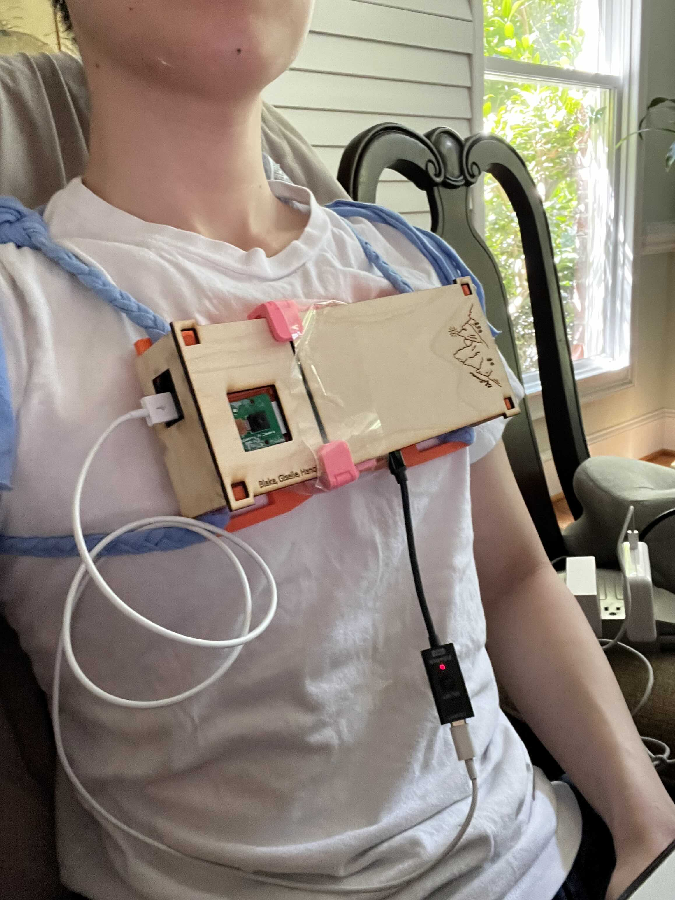

LifeTrace
TLDR: built+installed a camera on my chest and realized OCR (character recognition) can be used to cheaply record and store what I did in a day without using expensive VLMs. Recently I realized companies life Plaud and Pocket are picking up speed in the proliferation of AI-voice recorders that you can carry with you. I've always had in the back of the mind ideas surrounding self-quantification and they suddently reignited some impetus to build.
I don't think recording just your voice is enough. I'm interested in devices that can account or 'quantify' everything that you do. For me, this is cool because I can have even more detailed accounts of what I did in a day, and surface relevant information serendipidously.
Using a VLM to analyze images is too slow / expensive so I came up w/ a neat trick where I use RapidOCR to process videos at 2 frames per second on a cheap Digital Ocean droplet. Turns out this is highly effective at figuring out what I'm doing, since I mostly look at screens / text — and its better than screen recording since it doesn't care what screen/written text I'm looking at.
I setup a quick claude routine that grabs the OCR data from the server and analyses it, and it pretty much recovers exactly what I spent time on that day. I pipe it to another routine that references my daily notes / etc to surface interesting things I should read.

Limitations
The system is still pretty new (started the project a week ago), I might write another blog to update once I use it more / also integrating audio recording into the system.
I'm using a recording device built for a class final project (APPL 110 at UNC w/ Blake, Giselle) as the recording device. It can be made much more compact — currently half the volume is a raspi V4 and the other half is a big battery. I think it's possible to use a much smaller dedicated board for video/audio and also reduce the size of the battery as a result. Would like to add some other functions too, lmk if any ideas.
Comments